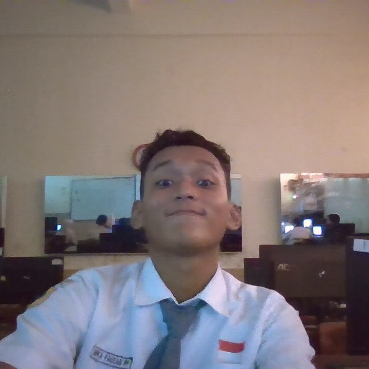
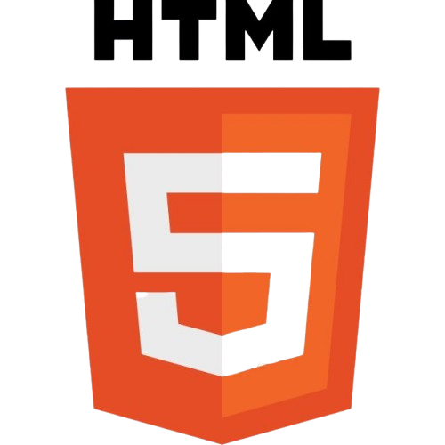
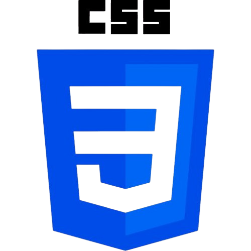
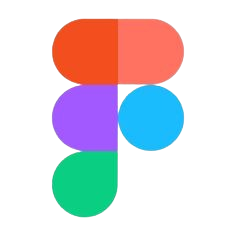
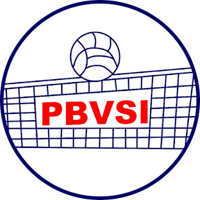
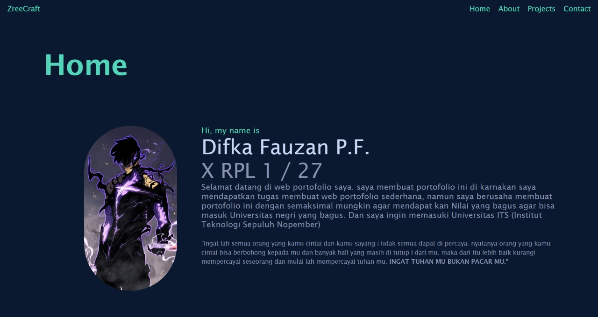
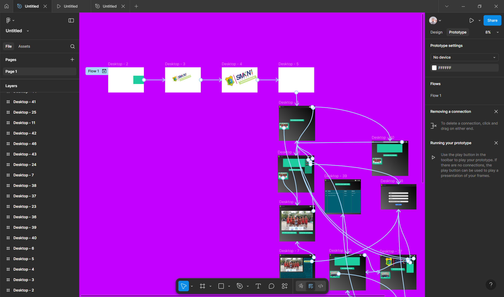

I am
a Web Developer
*No wealth link education and no poverty link ignorance*
~ali bin abi thalib

Hello, my name is Difka Fauzan Putra Febriyan.
BIODATA
Hello, my name is Difka Fauzan Putra Febriyan.
I'm a 10th grade student at SMK Negeri 1
Surabaya with a strong passion and talent for sports, especially volleyball.
I regularly train in beach volleyball every Monday, Wednesday, Friday, and Sunday afternoon,
and I also attend club volleyball practice every Tuesday, Thursday, and Saturday
Besides sports, I also enjoy front-end development.
I love creating attractive and interactive user interfaces,
even though I'm not very fond of back-end logic.
I find the visual and user experience aspects more
engaging than the complex code behind them.
I'm particularly interested in UI/UX design because I enjoy designing
layouts that are both functional and visually appealing.
While I enjoy both worlds, my main focus is volleyball,
which I see as a path to a future career and achievements.
Coding is more of a side passion that I pursue in my free time,
while my full commitment is toward growing as a volleyball
athlete and reaching a higher level in this field.
I have expertise in various fields, ranging from coding to playing games. Additionally, I am quite skilled in various sports. These are my skills, which allow me to master many things, even though adapting can sometimes be quite challenging. Here are my skills :




Here are some projects I have worked on

 - Copy.png)
